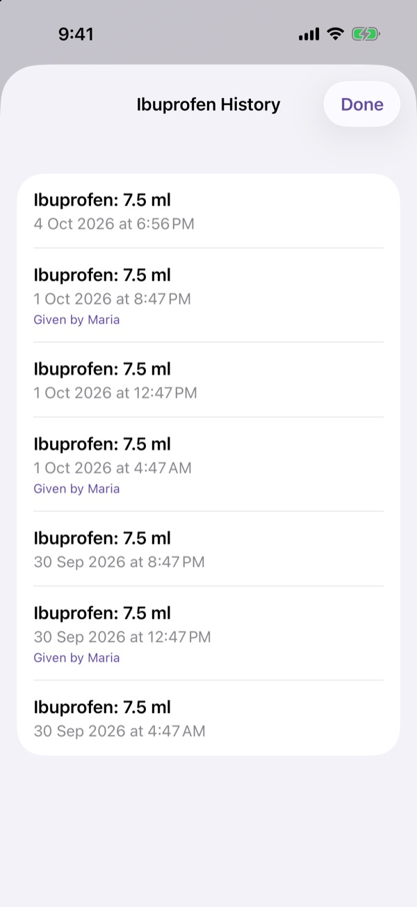

Keine Dosis vergessen – keine doppelt geben.
Behalte Medikamente, Fieber und Arztbesuche deiner Kinder in einer ruhigen App im Blick — live synchronisiert für Eltern, Betreuer und Kita.
- Kostenlos herunterladen
- Keine Werbung, niemals
- Wir verkaufen deine Daten nie
- Face ID oder Fingerabdruck-Sperre
- 10 Sprachen
Keine doppelten Dosen mehr um 3 Uhr nachts.
Müde und unsicher, ob es schon Zeit ist? Parenty warnt dich, wenn es für die nächste Dosis zu früh ist, und zeigt genau, wann sie fällig ist.
- Erinnerungen alle paar Stunden, zu festen Zeiten oder als lauter Alarm
- Eine Warnung vor einer zu frühen Dosis
- Überfällig, laufend und erledigt – auf einen Blick

„Hat ihr schon jemand das Medikament gegeben?“
Nie wieder fragen. Jede Dosis, die jemand einträgt, erscheint sofort auf jedem Handy der Familie – mit wer sie gegeben hat und wann.
- Lade Partner, Großeltern oder die Nanny per @Benutzername ein
- Im Verlauf sehen, wer jede Dosis gegeben hat
- Alle Handys aktualisieren sich sofort
Das Cloud-Backup ist für alle kostenlos. Das Teilen mit der Familie gehört zu Premium.

Baby auf dem Arm? Einfach fragen.
Trage eine Dosis oder Fieber ein, ohne das Handy zu entsperren oder die App zu öffnen. Sag es Siri auf dem iPhone oder deinem Assistenten auf Android – Parenty teilt es mit der Familie.
- „Ibuprofen in Parenty eintragen“
- „Welches Medikament ist als Nächstes in Parenty fällig?“
- Fieber, Gewicht und Größe eintragen und die letzte Dosis abfragen
Siri funktioniert ohne Einrichtung. Auf Android klappt es mit Assistenten, die App-Aktionen unterstützen, ab Android 16.
Alles an einem ruhigen Ort
Für müde Eltern gemacht: groß, klar und schnell zu bedienen, Tag und Nacht.
Fieber & Symptome
Temperaturen in °C oder °F und Symptome auf einer Skala von 1–5 eintragen, mit Notizen und Uhrzeiten.
Wachstum & Kurven
Gewicht und Größe für jedes Kind, mit WHO-Wachstumskurven.
Ärzte & Besuche
Deine Kinderärztin oder dein Kinderarzt nur einen Tipp entfernt. Besuche und Nachkontrollen eintragen und in den Kalender übernehmen.
PDF- & CSV-Berichte
Teile eine übersichtliche Zusammenfassung von Dosen, Temperaturen, Symptomen und Besuchen mit der Arztpraxis oder der Notaufnahme.
Jedes Kind
Farbcodierte Profile pro Kind, mit Filtern nach Datum, Kind oder wer den Eintrag gemacht hat.
Widgets & iPad
Trage Dosen direkt vom Home-Bildschirm ein, sieh Countdowns auf dem Sperrbildschirm oder nutze die Seitenleiste auf dem iPad.
Parenty in Aktion
Hell oder dunkel – es folgt deinem Handy.


Auch mit deiner Kita in Verbindung bleiben.
Lade deine Kita, Tagesmutter oder Großeltern für ausgewählte Kinder und Zeiträume ein. Sie erfassen Dosen, Mahlzeiten und Schlafzeiten, und du siehst den Tagesverlauf live — während deine privaten Einträge privat bleiben.
“I looked through many medicine tracking apps for something that had a really clear note about when the medicine was last taken and when it was due again. After trying close to 20, I found Parenty and it's been almost exactly what I've been looking for. The developer is also extremely open to feedback and quick to address.”
Kostenlos starten. Mit Premium teilen.
Alles für ein Kind ist kostenlos. Upgrade für Live-Synchronisierung mit Familie und Kita.
Kostenlos
Für immer kostenlos
- Medikamentenpläne, Erinnerungen und Dosis-Checks
- Temperatur- und Symptomeinträge
- 1 Kinderprofil
- 1 Arzt und 2 Besuche
- Cloud-Backup auf deinen eigenen Geräten
Premium
Monatlich oder einmaliger Kauf auf Lebenszeit
- Alles aus Kostenlos
- Mit Partner, Familie und Betreuungspersonen teilen – Live-Sync
- Unbegrenzt Kinder, Ärzte und Besuche
- PDF-Berichte und Fieberkurven
- Alarmeinstellungen
- Deine Kita einladen und ihren Tag sehen
Die App zeigt die Preise in deiner Landeswährung.
Fragen & Hilfe
Wie funktioniert die Synchronisierung zwischen Eltern und Betreuungspersonen?
Jedes angemeldete Konto wird kostenlos in der Cloud gesichert, sodass deine Daten ein neues Handy überstehen und auf all deinen Geräten aktuell bleiben. Mit Premium kannst du Partner, Großeltern oder die Nanny per @Benutzername einladen, und jede Dosis, die sie eintragen, erscheint sofort auf allen Handys.
Was ist kostenlos enthalten?
Medikamente und Dosen verfolgen, Erinnerungen, Temperatur- und Symptomeinträge, ein Kinderprofil, ein Arzt mit zwei Besuchen und Cloud-Backup. Premium bietet zusätzlich das Teilen mit der Familie, unbegrenzt Profile und Ärzte, PDF-Berichte, Fieberkurven und Alarmeinstellungen.
Kann ich mehrere Kinder verwalten?
Ja. Jedes Kind bekommt ein eigenes farbiges Profil, und du kannst Medikamente, Temperaturen, Symptome und Arztbesuche pro Kind filtern. Der kostenlose Plan enthält ein Kinderprofil; Premium schaltet unbegrenzt viele Profile frei.
Kann meine Kita oder mein Babysitter Parenty nutzen?
Ja. Mit Premium lädst du deine Kita oder Betreuung per Benutzername oder QR-Code ein, wählst Kinder und Zeitraum und siehst Dosen, Mahlzeiten und Schlafzeiten live auf der Startseite. Deine privaten Familieneinträge und Notizen bleiben unsichtbar.
Kann ich Parenty mit Siri oder meinem Android-Assistenten nutzen?
Ja. Sag auf dem iPhone zum Beispiel „Ibuprofen in Parenty eintragen“ oder „Welches Medikament ist als Nächstes in Parenty fällig?“ zu Siri – ohne Einrichtung. Ab Android 16 können Assistenten, die App-Aktionen unterstützen, Dosen, Temperaturen, Gewicht und Größe eintragen und prüfen, was als Nächstes fällig ist. Parenty warnt dich weiterhin vor einer zu frühen Dosis, und alles wird wie gewohnt mit deiner Familie geteilt.
Wie lösche ich mein Konto?
Öffne die Profileinstellungen und wähle „Konto löschen“. Dein Konto und seine Cloud-Daten werden entfernt.
Noch Fragen? Schreib uns an info@parenty.uk
Gelassen bleiben, selbst um 3 Uhr nachts.
Kostenlos für iPhone und Android.